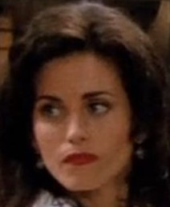
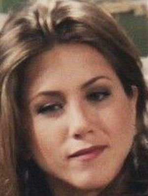
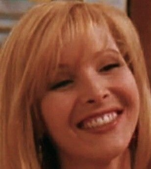

Selecione um personagem
- 
- 
- 
Mônica
Prática, organizada e disciplinada, a Mônica é aquela amiga que não consegue ficar parada.Organiza festas e as enche de regras, porque elas “ajudam a controlar a diversão”.

Prática, organizada e disciplinada, a Mônica é aquela amiga que não consegue ficar parada.Organiza festas e as enche de regras, porque elas “ajudam a controlar a diversão”.